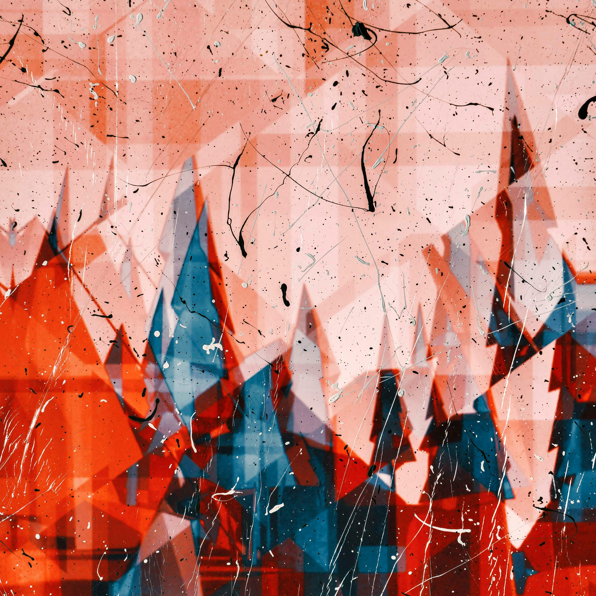

El diseño gráfico evoluciona constantemente. Algunas de las tendencias más destacadas son:
Si quieres conocer más, visita nuestra sección de tendencias.
Los colores intensos y los degradados están en auge en el diseño gráfico moderno. Se utilizan para atraer la atención y generar una experiencia visual dinámica. Muchas marcas están adoptando paletas de colores llamativas que rompen con los tonos tradicionales y generan una sensación de frescura y modernidad.
Los degradados, en particular, han resurgido como una forma efectiva de dar profundidad a los diseños, permitiendo transiciones suaves entre colores que hacen que los elementos gráficos sean más atractivos y fluidos.
El minimalismo sigue siendo una tendencia clave en el diseño gráfico. Se basa en el uso de espacios en blanco, elementos simples y composiciones limpias que transmiten mensajes de forma clara y efectiva. Este estilo busca reducir la sobrecarga visual, eliminando detalles innecesarios y priorizando la funcionalidad.
Las tipografías audaces complementan esta tendencia al permitir que el texto sea el protagonista del diseño. Letras grandes y gruesas, combinadas con un estilo sans-serif, aportan modernidad y refuerzan el impacto del mensaje sin la necesidad de elementos gráficos adicionales.
La incorporación de elementos 3D en el diseño gráfico ha crecido considerablemente gracias a los avances tecnológicos. Modelos tridimensionales, sombras realistas y animaciones permiten que los diseños sean más envolventes y atractivos para los usuarios.
Además, la interactividad juega un papel clave en la experiencia del usuario. Desde botones con efectos dinámicos hasta ilustraciones que responden al desplazamiento del mouse, el diseño gráfico ya no es solo estático. La interactividad no solo mejora la estética, sino que también mejora la usabilidad, haciendo que las interfaces sean más intuitivas y atractivas.